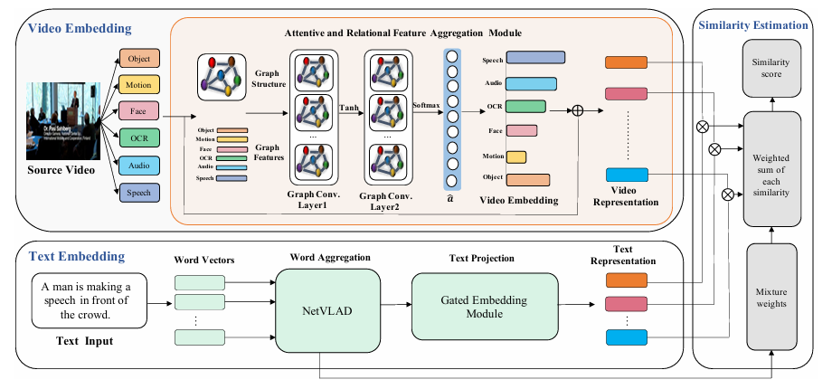
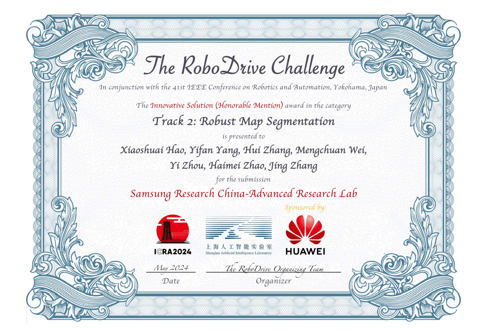

Xiaoshuai Hao
Researcher at BAAI


I am currently a researcher at the Xiaomi EV, focusing on embodied multimodal large models. Previously, I received my Ph.D. from the Institute of Information Engineering at the Chinese Academy of Sciences, advised by Prof. Bo Li.
We have several academic visitor and intern positions at Xiaomi EV. We actively work on Multimodal Retrieval, Multi-Modal Learning, Automatic Driving Perception, and Embodied Intelligence. If you like what we do, don't hesitate to contact me.
Research Interests
- Embodied Intelligence
- Automatic Driving Perception
- Multi-Modal Learning
News
- [11/2025] - One paper was accepted by AAAI 2026! Congrats to Lingfeng Zhang!
- [09/2025] - Exciting news!One paper was accepted by International Journal of Robotics Research (IJRR)! Congrats to Dingzhe Li!
- [09/2025] - Exciting news! We won first place in Live Broadcasting Video Quality Assessment Challenge, IEEE VCIP 2025. Congrats to Erjia Xiao and Lingfeng Zhang!
- [09/2025] - Two papers have been accepted by NeurIPS 2025!
- [09/2025] - One paper was accepted by Information Fusion! Congrats to Ye Ni!
- [08/2025] - Exciting news! We won third place in ICCV EVQA-SnapUGC Challenge, with our model achieving the best single-modality performance. Congrats to Erjia Xiao and Lingfeng Zhang!
- [08/2025] - Exciting news! Our paper, “Exploring Typographic Visual Prompts Injection Threats in Cross-Modality Generation Models,” has been awarded the Best Student Paper Award at the IJCAI 2025 Workshop and Challenge on Deepfake Detection, Localization, and Interpretability.
- [08/2025] - One paper was accepted by ADMA 2025!
- [08/2025] - One paper was accepted by CIKM 2025!
- [08/2025] - One paper was accepted by Neurocomputing! Congrats to Cheng Shang!
- [08/2025] - Four papers have been accepted by ACM Multimedia 2025 Dataset Track!
- [07/2025] - DADA++ was accepted by ACM ToMM！
- [07/2025] - One paper was accepted by Data Intelligence！ Congrats to Yang Lei!
- [07/2025] - Exciting news! The RoboBrain 2.0 Technical Report is now available!
- [07/2025] - One paper was accepted by ACM MM 2025！ Congrats to Yuting Zhao and Yuheng Ji!
- [06/2025] - One paper was accepted by IJCAI 2025 Workshop on Deepfake Detection！
- [06/2025] - Two papers have been accepted by ICCV 2025! Congrats to Zhihui and Yinuo!
- [06/2025] - Two papers have been accepted by IROS 2025! Congrats to Yingbo and Shuaike!
- [06/2025] - We are hosting the The RoboSense Challenge at IROS 2025.
- [06/2025] - I will give an oral presentation at the RoDGE workshop during IROS 2025.
- [06/2025] - Invited to join the editorial board of Data Intelligence.
- [06/2025] - We are hosting the VQualA Challenges at ICCV 2025.
- [05/2025] - MapNav was accepted by ACL 2025！ Congrats to Lingfeng Zhang!
- [05/2025] - One paper was accepted by TIP！
- [05/2025] - SafeMap was accepted by ICML 2025.
- [04/2025] - One paper was accepted by IJCAI 2025.
- [04/2025] - One paper was accepted by ICMR 2025.
- [04/2025] - BCTR was accepted by Information Fusion. Congrats to Peng Hao!
- [03/2025] - Three papers have been accepted by ICME 2025!
- [03/2025] - One paper was accepted by KBS! Congrats to Jinglin He!
- [02/2025] - RoboBrain was accepted by CVPR 2025.
- [02/2025] - MapFusion was accepted by Information Fusion.
- [01/2025] - ESC-MISR has been selected as a candidate for the Best Paper Award at Multimedia Modelling 2025. Congrats to Zhihui Zhang!
- [01/2025] - TASAR was accepted by ICLR 2025.
- [12/2024] - KALAHash was accepted by AAAI 2025.
- [09/2024] - MapBench was accepted by NeurIPs 2024.
- [07/2024] - MapDistill was accepted by ECCV 2024.
Industrial Experience
Amazon Web ServicesMentor：Yi Zhu, Mu Li |
Samsung Research China - Beijing (SRC-B） |
Beijing Academy of Artificial Intelligence |
Recent Publications
* equal contributions ‡ project lead § corresponding author
|
A Hierarchical Reinforcement Learning Framework for Multi-UAV Combat Using Leader-Follower Strategy |

|
RoboBrain: A Unified Brain Model for Robotic Manipulation from Abstract to Concrete |
|
TASAR: TRANSFER-BASED ATTACK ON SKELETAL ACTION RECOGNITION |
|
AS-GCL: Asymmetric Spectral Augmentation on Graph Contrastive Learning |

|
MapFusion: A novel BEV feature fusion network for multi-modal map construction
Information Fusion, 2025
|

|
STViT+: improving self-supervised multi-camera depth estimation with spatial-temporal context and adversarial geometry regularization
Applied
Intelligence,
2025
|
|
Is Your HD MapConstructor Reliable under Sensor Corruptions? |

|
MapDistill: Boosting Efficient Camera-based HD Map Construction via Camera-LiDAR Fusion Model Distillation |
|
KALAHash: Knowledge-Anchored Low-Resource Adaptation for Deep Hashing |

|
FTF-ER: Feature-Topology Fusion-Based Experience Replay Method for Continual Graph Learning
ACM Multimedia (MM), 2024
|

|
MBFusion: A New Multi-modal BEV Feature Fusion Method for HD Map Construction |
|
CUSTOMIZED TREATMENT PER PIXEL FOR BLIND IMAGE SUPER-RESOLUTION |

|
Enhancing 3D Hand Pose Estimation via Dense Ordinal Regression Network |

|
ESC-MISR: Enhancing Spatial Correlations for Multi-Image Super-Resolution in Remote Sensing |
|
Dual Alignment Unsupervised Domain Adaptation for Video-Text Retrieval |

|
Uncertainty-Aware Alignment Network for Cross-Domain Video-Text Retrieval |

|
MixGen: A NewMulti-Modal Data Augmentation |
|
LISTEN AND LOOK: MULTI-MODAL AGGREGATION AND CO-ATTENTION NETWORK FOR VIDEO-AUDIO RETRIEVAL |

|
Multi-Feature Graph Attention Network for Cross-Modal Video-Text Retrieval |
|  |
WHAT MATTERS: ATTENTIVE AND RELATIONAL FEATURE AGGREGATION NETWORK FOR VIDEO-TEXT RETRIEVAL |
Unpublished Manuscript
* equal contributions ‡ project lead § corresponding author
|
TLA: Tactile-Language-Action Model for Contact-Rich Manipulation
arXiv
|

|
AffordGrasp: In-Context Affordance Reasoning for Open-Vocabulary Task-Oriented Grasping in Clutter
arXiv
|
|
Enhancing Adversarial Robustness of Vision-Language Models through Low-Rank Adaptation
arXiv
|
|
What Foundation Models can Bring for Robot Learning in Manipulation : A Survey
arXiv
|
|
BCTR: Bidirectional Conditioning Transformer for Scene Graph Generation
arXiv
|
|
Communication-Efficient Personalized Federal Graph Learning via Low-Rank Decomposition
arXiv
|
|
DWCL: Dual-Weighted Contrastive Learning for Multi-View Clustering
arXiv
|
|
MapNav: ANovel Memory Representation via Annotated Semantic Maps for VLM-based Vision-and-Language Navigation
arXiv
|
|
MSC-Bench: Benchmarking and Analyzing Multi-Sensor Corruption for Driving Perception
arXiv
|
International Competition
|
EPIC-Kitchens Dataset Challenges
IEEE/CVF Computer Vision and Pattern Recognition (CVPR)
|
|
EPIC-Kitchens Dataset Challenges
IEEE/CVF Computer Vision and Pattern Recognition (CVPR)
|
|
EPIC-Kitchens Dataset Challenges
IEEE/CVF Computer Vision and Pattern Recognition (CVPR)
|
|  |
The RoboDrive Challenge
IEEE Conference on Robotics and Automation (ICRA)
|
|
The RoboDrive Challenge
IEEE Conference on Robotics and Automation (ICRA)
|
|
A Challenge for Out-of-Distribution Generalization in Computer Vision (OOD-CV)
IEEE/CVF International Conference on Computer Vision (ICCV)
|
Academic Services
Conference Reviewer
- IEEE/CVF Conference on Computer Vision and Pattern Recognition (CVPR)
- IEEE/CVF International Conference on Computer Vision (ICCV)
- European Conference on Computer Vision (ECCV)
- Conference on Neural Information Processing Systems (NeurIPS)
- International Conference on Learning Representations (ICLR)
- International Conference on Machine Learning (ICML)
- Association for the Advancement of Artificial Intelligence (AAAI)
- IEEE International Conference on Robotics and Automation (ICRA)
- IEEE/RSJ International Conference on Intelligent Robots and Systems (IROS)
Journal Reviewer
- International Journal of Computer Vision (IJCV)
- IEEE Transactions on Pattern Analysis and Machine Intelligence (TPAMI)
- IEEE Transactions on Neural Networks and Learning Systems (TNNLS)
- IEEE Transactions on Intelligent Vehicles (TIV)
- IEEE Transactions on Circuits and Systems for Video Technology (TCSVT)
- IEEE Transactions on Multimedia (TMM)
- IEEE Robotics and Automation Letters (RA-L)